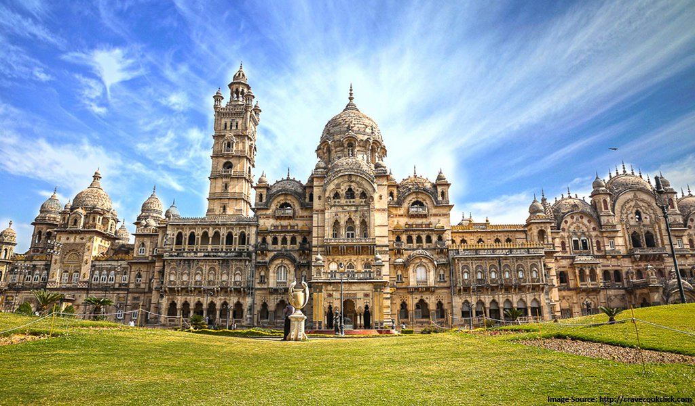
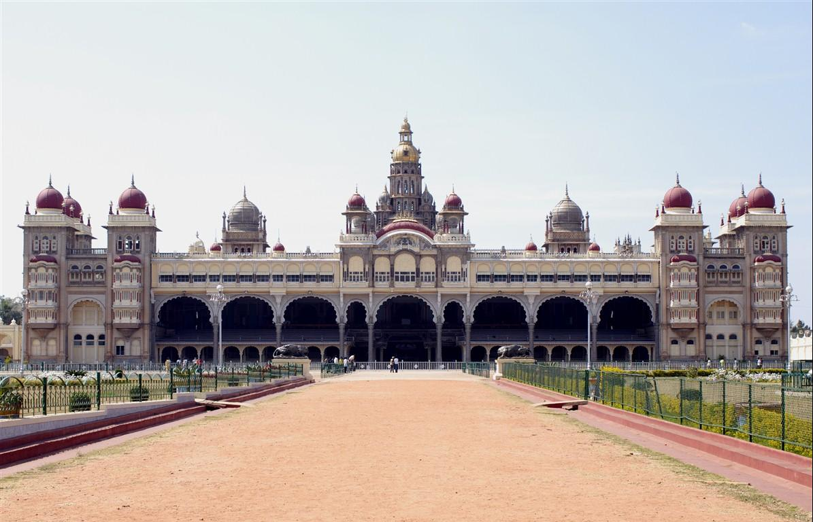
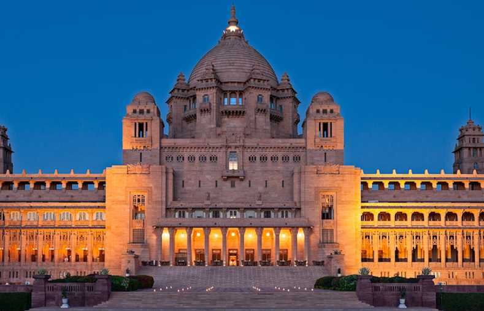

Post 1 Title
India's heritage is a real treasure trove brimming with diversity and richness. The chapters of our history are coloured by the reign of many benevolent maharajas and sultans. Their splendid traditions and culture are reflected in the grand palaces they constructed in various parts of India.
These majestic abodes, adorned with exquisite artworks and captivating aesthetics, are truly striking and can transport us back to our illustrious history. While some of these magnificent structures have transformed into heritage sites, numerous others now welcome guests as luxurious hotels, offering a taste of the regal lifestyle to the common folk.

Post 2 Title
1971, India's princely order was abolished, ending the privileges enjoyed by retired maharajas and nawabs. Most of the maharajas (there were 671 of them!), who were impoverished by the end of their civil service, converted their palaces into museums and hotels. The homes are a testimony to the splendour of feudal and colonial times, transformed into luxurious and historic caravanserais for the delight of travellers. Sometimes the monarch still lives there, reserving a wing or a corner of the garden. Here is our pick of the top ten most beautiful palace hotels in India. These hotels welcome visitors like kings.

Post 3 Title
India is a land of culture and tradition, of values and a deep-rooted rich history. Boasting of a rich and royal past replete with Maharajas, fortresses, forts, kings, queens, nizams, sultans and all that princely jazz and grandeur, these opulent palaces in India offer a mesmerizing peek into the bygone era. Some of these heritage homes and splendid palaces in India have been converted into luxury stays for you to get a taste of the regalia and royalty..